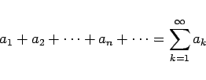
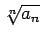
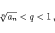
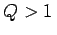
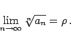
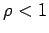
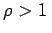
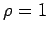
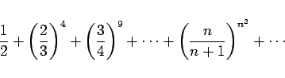
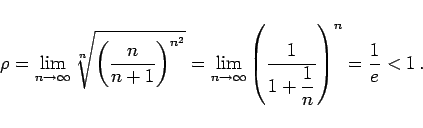

Inhalt Index DeskTop Bronstein

 Unendliche Reihen Reihen mit konstanten Gliedern Konvergenzkriterien für Reihen mit positiven Gliedern
Unendliche Reihen Reihen mit konstanten Gliedern Konvergenzkriterien für Reihen mit positiven Gliedern


Gilt für eine Reihe
|  | (7.28a) |
von einem gewissen n an für alle Zahlen 
|  | (7.28b) |
dann ist die Reihe konvergent. Sind umgekehrt von einem gewissen n an alle Zahlen größer als eine Zahl Q und ist , dann divergiert die Reihe. Daraus ergibt sich: Gilt
|  | (7.28c) |
dann ist die Reihe konvergent für  und divergent für . Für  kann mit dem Wurzelkriterium keine Aussage über das Konvergenzverhalten gemacht werden.
| Beispiel |
|
Die Reihe |
|  | (7.29a) |
ist konvergent wegen
|  | (7.29b) |